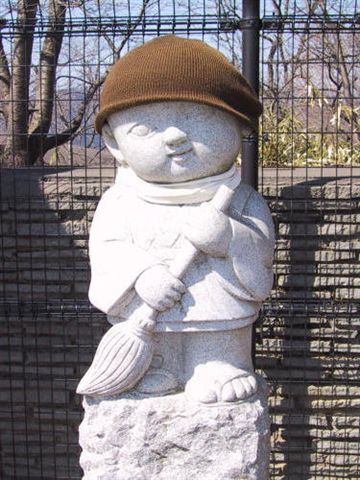
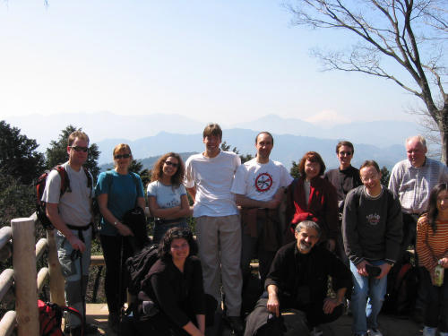
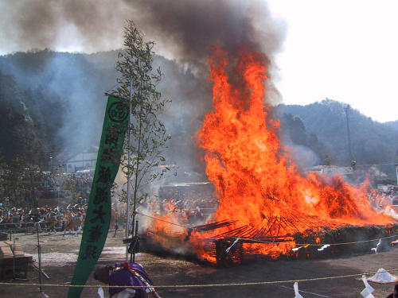
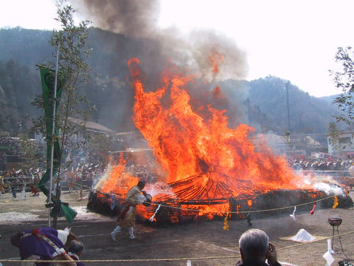
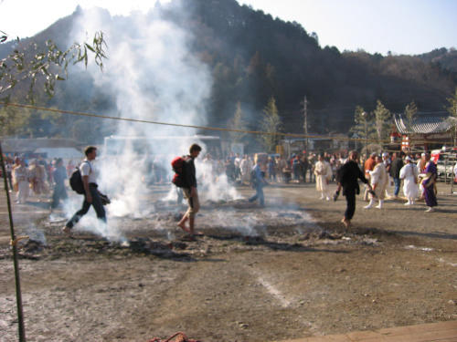
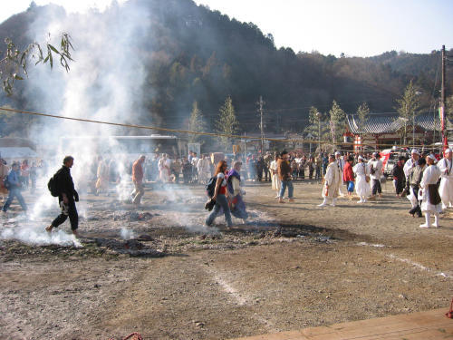
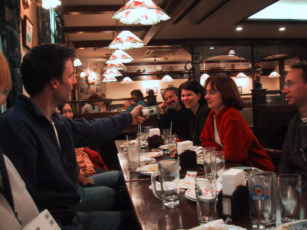
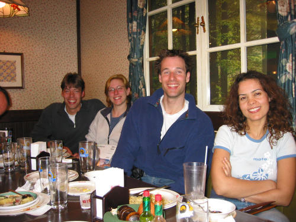

Takao san,
March 10, 2002
(organised by Paul Reay)
Photos by Stefan.

What is this supposed to mean?

Mandatory group photo.

Hiwatari ceremony.

Pouring oil over the fire?

Hiwatari ( wading in the fire).

It's so hot!

Semi-mandatory after walk dinner.

Have had a nice Onsen & Beer.
Back to the Home Page